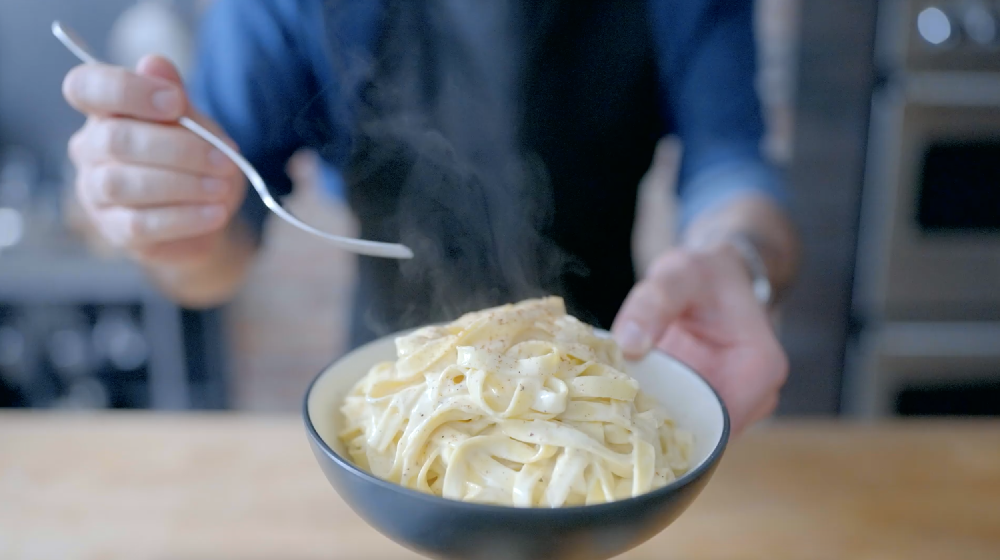

Fettuccine Alfredo

Babish finally takes on the classic Fettuccine Alfredo, inspired by The Office.
Ingredients
Fettuccine Alfredo Ingredients
- 1 Tbsp + 1/2 tsp kosher salt, divided
- 1 1/2 Cups heavy cream, divided
- 2 Tbsp unsalted butter
- 1 tsp freshly ground black pepper
- 9 oz fresh fettuccine pasta
- 2 oz parmesan cheese, grated
- 1/8 tsp freshly grated nutmeg
Homemade Pasta Dough Ingredients
- 12 oz all-purpose flour
- 8 eggs
- 1 1/2 tsp kosher salt
Original Fettuccine Alfredo Ingredients
- 1 Tbsp kosher salt + more to taste
- 1 lb homemade fettuccine pasta
- 5 oz european style unsalted butter, thinly sliced
- 5 oz parmesan cheese, grated
- 1/4-1/2 cup pasta water
Instructions
Fettuccine Alfredo
Recipe from America's Test Kitchen
- Bring a large pot of water with 1 tablespoon of salt to a boil
- Meanwhile, add 1 cup heavy cream and the butter to a large skillet. Melt over medium-low heat and allow the mixture to reduce by one third, about 5-10 minutes.
- Once the sauce is reduced, turn the heat off and add the remaining 1/2 cup of heavy cream to the skillet. Season with the remaining salt and pepper.
- Add the pasta to the boiling water. Cook according to the manufacturer's directions for al dente pasta, about 2-3 minutes.
- Transfer the cooked pasta directly into the skillet with the heavy cream sauce. Reserve the pasta water.
- Turn the heat to low and add the parmesan and nutmeg to the pasta. Cook the pasta and sauce for about 1-2 minutes, stirring with tongs, until the cheese is melted.
- Add about 1/4 cup of the reserved pasta water to the sauce. Once again, stir with the tongs until the sauce is glossy and coats the pasta.
- Serve immediately.
Homemade Pasta Dough
- Combine flour, salt, and eggs in a food processor.
- Process for 60 seconds until the dough ball forms.
- Remove the dough from the processor and form it into a ball.
- Wrap the dough tightly and rest for a minimum of 30 minutes at room temperature or up to overnight in the fridge.
- Using a pasta roller, work in batches to roll out the dough. Start on the widest setting and decrease the size by two settings with every roll. Roll until the dough reaches the second thinnest setting (or to your preference).
- Cut the dough using a pasta cutting attachment or using a knife into long strands about ¼ inch wide.
- Dust the pasta in flour and set aside on a large rimmed baking sheet until ready to cook.
Original Fettuccine Alfredo
- Bring a medium pot of water with 1 tablespoon of salt to a boil. Take about 2 cups of the water and transfer it to a large metal mixing bowl. Toss the water around the bowl to warm it.
- Remove the water from the bowl and pat dry.
- Add the butter to the warmed bowl along with 2 ounces of parmesan cheese.
- Cook the fresh pasta for 2-3 minutes, then transfer it directly to the mixing bowl.
- Sprinkle another 2 ounces of cheese over the cooked pasta and about ¼ cup of the pasta water.
- Toss the pasta with tongs until a glossy, thickened, homogenous sauce forms that coats the pasta well. Add another ¼ cup of pasta water if necessary.
- Season with salt and sprinkle the remaining 1 ounces of parmesan cheese overtop the pasta.
- Serve immediately.